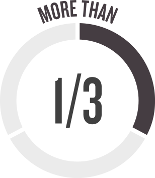

AQUI ESTÃO ALGUMAS ESTATÍSTICAS RELACIONADAS À DIVERSIDADE, EQUIDADE E INCLUSÃO QUE VOCÊ PODE ACHAR INTERESSANTE QUANDO SE TRATA DE COMO VIESES "INVISÍVEIS" SE TORNAM INEGAVELMENTE VISÍVEIS.
ESTATÍSTICAS DO DEI
É MAIS PROVÁVEL QUE O NOME DE UM CEO SEJA
OLÁ! MEU NOME É __________
JOHN
Ou
OLÁ! MEU NOME É __________
DAVI
DO QUE TER UM CEO QUE É UMA MULHER.
UMA PESQUISA DE
400 funcionários em tempo integral com mais de 40
Experiente ou conhecia alguém que experimentou discriminação por idade .

Senti que sua idade os impediu de conseguir um emprego desde que completaram 40 anos.
Senti que seu trabalho estava em risco devido à sua idade.
CURRÍCULOS COM NOMES BRANCOS RECEBIDOS
50
%
MAIS RETORNOS DE CHAMADAS
DO QUE NOMES ASSOCIADOS A PESSOAS DE AFRO-AMERICANO\N DESCENT.
SOMENTE
DE EMPRESAS NOS EUA.
atingiram a meta do Departamento do Trabalho dos EUA de ter
REPRESENTAÇÃO POR INCAPACIDADE NA FORÇA DE TRABALHO.
A PROBABILIDADE DE UMA MULHER SER CONTRATADA AUMENTA QUANDO AS INFORMAÇÕES DE IDENTIFICAÇÃO SÃO REMOVIDAS DE UM APLICATIVO\N OU AUDIÇÃO.
A PROBABILIDADE DE UMA MULHER SER CONTRATADA AUMENTA...
... AO IDENTIFICAR INFORMAÇÕES É REMOVIDO DE UM APLICATIVO OU AUDIÇÃO.
EM EMPRESAS ONDE
10% DOS LÍDERES SENIORES SÃO MULHERES,
METADE DOS HOMENS VÊ AS MULHERES COMO SENDO "BEM REPRESENTADAS" NA SUA EMPRESA.
ASIÁTICO-AMERICANO "OS PROFISSIONAIS DE COLARINHO BRANCO SÃO O GRUPO MENOS PROVÁVEL A SER PROMOVIDO DE FUNÇÕES INDIVIDUAIS DE CONTRIBUINTE\N PARA A GESTÃO."
De acordo com um relatório da ORGANIZAÇÃO PARA COOPERAÇÃO E DESENVOLVIMENTO ECONÔMICO\N
A porcentagem de pessoas que se identificam como LGBT que são menos propensas a serem empregadas do que pessoas não LGBT.
A porcentagem de pessoas que se identificam como LGBT têm ganhos menores em comparação com pessoas não LGBT.
A porcentagem de pessoas que se identificam como LGBT que são menos propensas a ocupar altos cargos gerenciais.
ESSAS SÃO APENAS ALGUMAS DAS MANEIRAS PELAS QUAIS NOSSOS VIESES INCONSCIENTES AFETAM A INCLUSÃO DE PESSOAS REAIS DE MANEIRAS MUITO REAIS.\N
- https://www.nytimes.com/2015/03/03/upshot/fewer-women-run-big-companies-than-men-named-john.html?_r=0
- https://www.hiscox.com/documents/2019-Hiscox-Ageism-Workplace-Study.pdf
- https://www.nber.org/papers/w9873
- https://diversity.social/disability/#2-disability-statistics-around-the-world
- https://www.nytimes.com/2016/02/28/magazine/is-blind-hiring-the-best-hiring.html
- https://womenintheworkplace.com
- https://hbr.org/2018/05/asian-americans-are-the-least-likely-group-in-the-u-s-to-be-promoted-to-management
- https://www.oecd.org/els/soc/lgbti.htm